1F64F신앙과 묵상 30개
1F4D626EA271D-FE0F1F54A-FE0F1F56F-FE0F1F4DD1F90D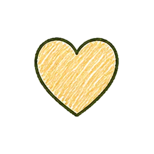
노란색 하트1F49B1F4961F4FF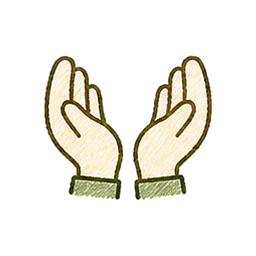
내민 두 손1F9321FAF01FAF626D1-FE0F2626-FE0F1F6D0262E-FE0F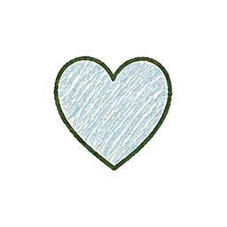
밝은 파란색 하트1FA751F9701F60D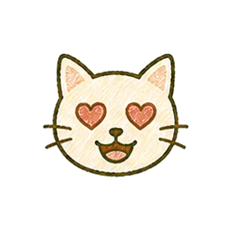
하트 눈 고양이 얼굴1F63B1F48C1F495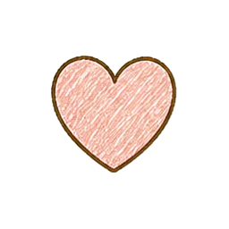
분홍색 하트1FA771F4911F47C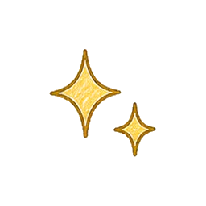
반짝반짝2728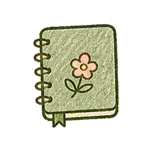
표지가 있는 노트1F4D41F4D5업무와 배움 45개
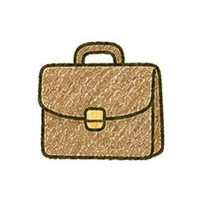
서류 가방1F4BC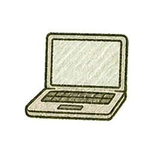
노트북1F4BB1F4DA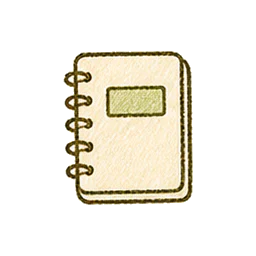
노트1F4D3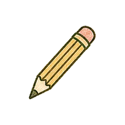
필기도구270F-FE0F1F4C5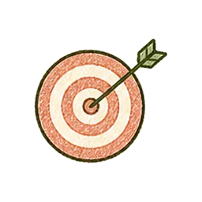
과녁 명중1F3AF1F4A11F4CA1F4C21F6DC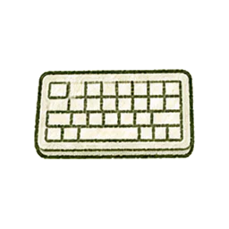
키보드2328-FE0F1F5A5-FE0F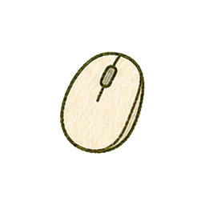
컴퓨터 마우스1F5B1-FE0F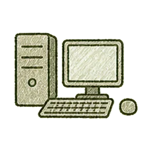
컴퓨터1F5B2-FE0F1F4D7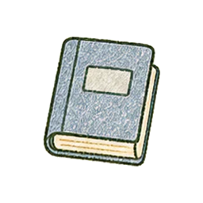
파란색 책1F4D81F4D9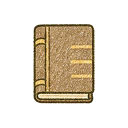
원장1F4D2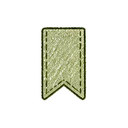
책갈피1F5161F4C6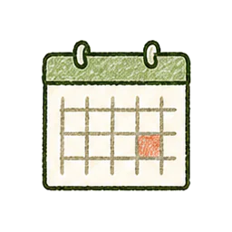
벽걸이 달력1F5D3-FE0F1F4C11F3B9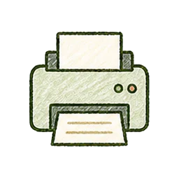
인쇄기1F5A8-FE0F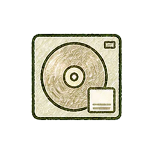
미니 디스크1F4BD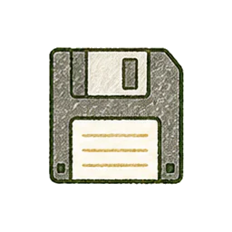
플로피 디스크1F4BE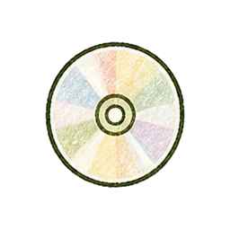
광학 디스크1F4BF1F4C0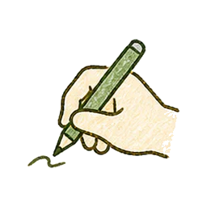
글을 쓰고 있는 손270D-FE0F1F4D1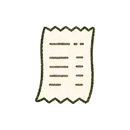
영수증1F9FE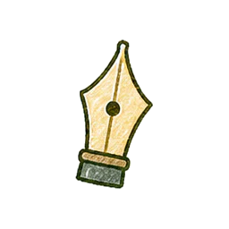
검은색 펜촉2712-FE0F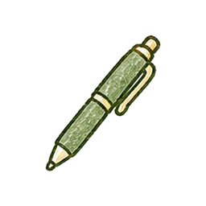
볼펜1F58A-FE0F1F5131F50F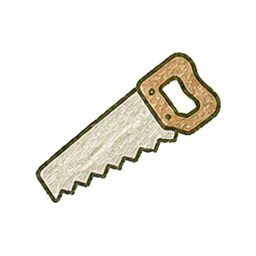
목공 톱1FA9A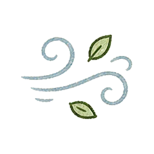
맑은 공기1FA9F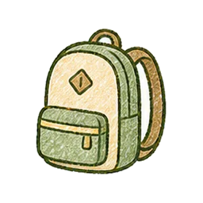
학생 가방1F3921F3EB1F4B91F4C81F4C91F4E31F399-FE0F건강과 운동 55개
1F3C3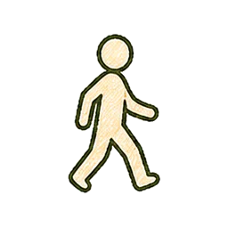
걷는 사람1F6B61F9D81F3CB-FE0F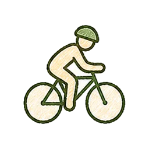
자전거 타는 사람1F6B4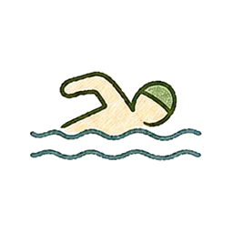
수영하는 사람1F3CA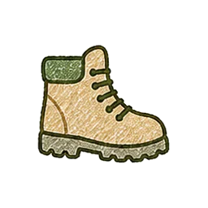
하이킹1F97E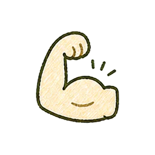
이두박근1F4AA1F6341F6CC1F3BD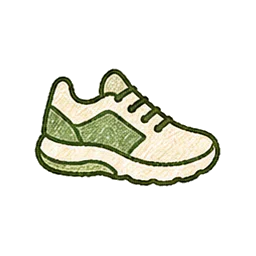
스니커즈1F45F1F3BE1F3C0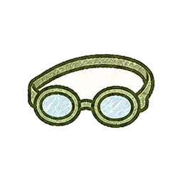
안구 보호 장비1F97D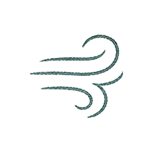
달려나감1F4A8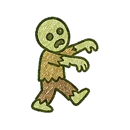
워킹 데드1F9DF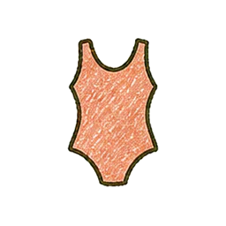
원피스 수영복1FA71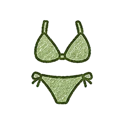
삼각 수영복1FA721FA7A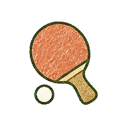
탁구채1F3D326BD26BE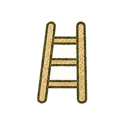
사다리1FA9C1F3C81F3C9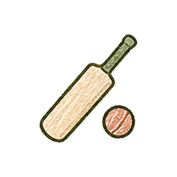
크리켓1F3CF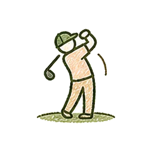
골프치는 사람1F3CC-FE0F1F3E51F6B5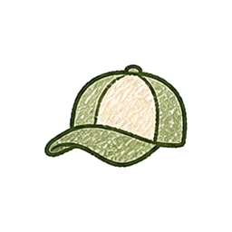
야구모자1F9E2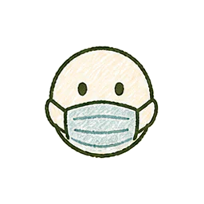
마스크 낀 얼굴1F637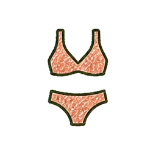
수영복1F459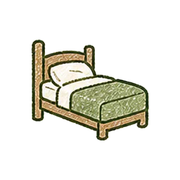
호텔1F6CF-FE0F1F4A41F48A1FA7B1F3C5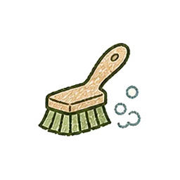
깨끗한1FAA51F3881F38A1FA731F94E1F3D01F3B31F3D11F94D1F3B11F52E1F9F61F9381F6B22665-FE0F2695-FE0F1F9D7생활과 돌봄 45개
1F3E01F9F91F9FA1F6BF1F6D21F4151F408270523F01F9FC1F9FD1F6CD-FE0F1FAB41F3E11F52A1F4B01FAE71F4361F4311F46A1F3731F37D-FE0F1F3741F6D61F45C1F45D1FA991F4B41F4B51F4B61F4B71F4B81F4B31F3BA1FA9D1F9EB1FAAA1F6C01F45A1F50D1F50E1F5262702-FE0F1F52826CF-FE0F식사와 수분 35개
1F4A71F95B26151FAD61F34E1F34C1F9571F35A1F35E1F95A1F3751F9551F9501F9CB1F3491F9511F3451F9541F9521F9631F9C91F34D1F34F1F3461F3481F6B11F37C1F95E1F9531F95C1F35C1F3761F9561F9591F964자연과 성장 30개
1F3311F3331F33F1F3431F33B2600-FE0F1F3192B501F30826F0-FE0F1F326-FE0F26C51F324-FE0F1F325-FE0F26F1-FE0F1F3041F3381F33C1F33526C8-FE0F1F327-FE0F1F38B1F3321F3342618-FE0F1F3F5-FE0F1F3401F4901F4AE1FAB7감정과 격려 35개
1F60A1F6041F44D1F44F1F3891F3C61F3811F6061F6021F9731F4971FA851F3861F3871F396-FE0F1F601263A-FE0F1F6391F63C1F9231F4981F49D1F4931F49E1F49A1F4991F49C1F91F1FAC21F3901F3911F38D1F3801F9471F948시간과 이동 25개
231A1F3051F3071F5FA-FE0F1F4CD1F6971F68623F2-FE0F231B23F31F68B23F1-FE0F1F570-FE0F1F5671F5601F5611F5621F5631F5641F5651F5661F3031F3091F5FE1F698